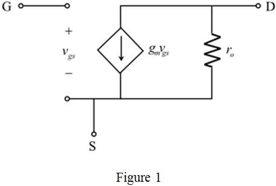
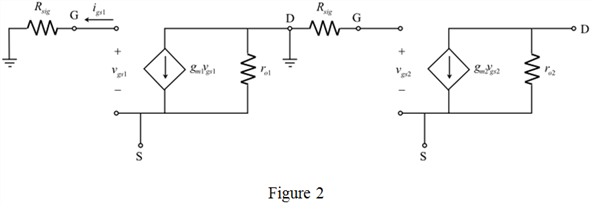

Find the output of the circuit in Figure 1.

The gate to source voltage,  is nothing but the input voltage,
is nothing but the input voltage,  . Therefore,
. Therefore,
Find the gain of the common source amplifier.
Thus, the gain of the amplifier,  is, .
is, .
(a)
Refer to the common source amplifier circuit in Figure P9.102 (a) in the textbook.
Find dc small-signal equivalent circuit of the common source amplifier. Refer to Figure 9.13 in the textbook for the equivalent circuit of high-frequency response of the common source amplifier.
Neglect all the capacitances and resistances, to obtain the small-signal equivalent circuit of the common source amplifier.

Find the output of the circuit in Figure 1.
The gate to source voltage, is nothing but the input voltage, . Therefore,
Find the gain of the common source amplifier.
Thus, the gain of the amplifier, is, .
Refer to Figure 9.19 in the textbook for the generalized high-frequency equivalent circuit of the common source amplifier.
The voltage source in the circuit is and the input resistance is  . Also the load resistance in the circuit is
. Also the load resistance in the circuit is  only.
only.
Apply the method of open circuit time constants on the high-frequency equivalent circuit of common source amplifier.
Neglect the capacitances, to get the resistance,  equal to
equal to  .
.
Neglect the capacitances,  to get the resistance, equal to
to get the resistance, equal to  .
.
Refer to Figure 9.21 in the textbook for the application of the open-circuit time constants method to the common source amplifier.
Find the resistance, .
Find the voltage at node .
Find the current at node  .
.
Substitute the expression for  .
.
Simplify the expression further.
Find the resistance, .
 .
.
Thus, the expression for the effective time constant,  is,
is,
.
Substitute 1 mA/V for  , and
, and  for
for  in the expression for
in the expression for  .
.
Thus, the value of gain  is, .
is, .
Substitute 1 mA/V for  ,
,  for
for  ,
,  for
for  , 20 fF for
, 20 fF for  , 5 fF for
, 5 fF for  , and 10 fF for
, and 10 fF for  in the expression for
in the expression for  .
.
Find the upper 3-dB frequency.

Substitute 2.8 ns for  .
.
Thus, the upper 3-dB frequency,  is, .
is, .
Find the gain-bandwidth product.
Substitute for  and 56.84 MHz for
and 56.84 MHz for  .
.

Thus, the gain-bandwidth product is,  .
.
(b)
Refer to the common drain-common source amplifier circuit in Figure P9.102 (b) in the textbook.
It is a source follower circuit placed between the signal source and the input of the common source amplifier.
Consider that the following is the expression for the gain of the common-drain amplifier.
Here, the load resistance is,
There is no load resistance in the circuit. Neglect the capacitances,  to get the resistance,
to get the resistance,  equal to
equal to  . Therefore,
. Therefore,
Find the output of the common-drain amplifier.
 , is nothing but the input voltage, . Therefore,
, is nothing but the input voltage, . Therefore,
Consider the small signal equivalent of the common source amplifier from Figure 1.
Find the output of the circuit in Figure 1.
The gate to source voltage of transistor  , is nothing but the output voltage of transistor,
, is nothing but the output voltage of transistor,  . Therefore,
. Therefore,
Substitute the expression for the output voltage of transistor,  .
.
Find the gain of the common drain-common source amplifier.
Thus, the gain of the amplifier,  is, .
is, .
Refer to Figure 9.32 in the textbook for the generalized high-frequency equivalent circuit of the common drain amplifier. Refer to Figure 9.19 in the textbook for the generalized high-frequency equivalent circuit of the common source amplifier.
Here, the load resistance,  is
is  and neglect all capacitances.
and neglect all capacitances.
Combine the both circuits to obtain the overall high-frequency equivalent circuit of the common drain-common source amplifier.

Apply the method of open circuit time constants on the high-frequency equivalent circuit of common drain-common source amplifier.
Neglect the capacitances, to get the resistance, equal to  .
.
Neglect the capacitances, to get the resistance, equal to  .
.
Find the resistance, seen by  by straightforward analysis.
by straightforward analysis.
Find the resistance, . It is nothing but the output resistance of the common-drain amplifier.
Find the resistance, seen by  .
.
Find the voltage at node  .
.
Substitute for  .
.
Find the current at node  .
.
Simplify the expression further.
Find the resistance, .

Substitute the resistances values in the expression for  .
.
Thus, the expression for the effective time constant,  is,
is,
.
Substitute 1 mA/V for  ,
,  for
for  , 1 mA/V for , and
, 1 mA/V for , and  for
for  in the expression for
in the expression for  .
.
Thus, the value of gain  is, .
is, .
Substitute 1 mA/V for  ,
,  for
for  , 1 mA/V for
, 1 mA/V for  , and
, and  for
for  ,
,  for
for  , 20 fF for , 5 fF for , 20 fF for , 5 fF for , and 10 fF for
, 20 fF for , 5 fF for , 20 fF for , 5 fF for , and 10 fF for  in the expression for
in the expression for  .
.

Substitute 557 ps for  .
.
Thus, the upper 3-dB frequency,  is, .
is, .
Find the gain-bandwidth product.
Substitute for  and 285.7 MHz for
and 285.7 MHz for  .
.
Thus, the gain-bandwidth product is, .
Hence, it is observe that the band extension is obtained for the circuit in Figure P9.102 (b) than the circuit in Figure P9.102 (a).